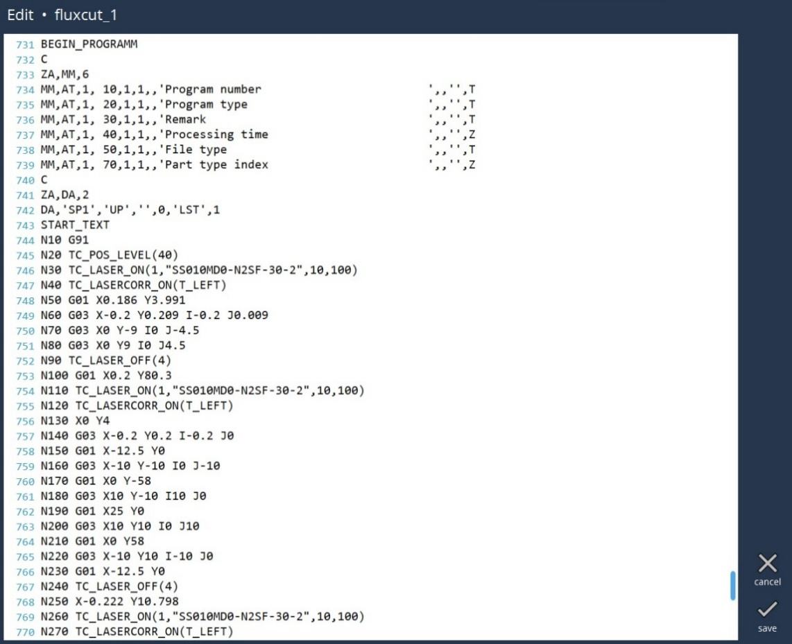

Editar código CN
Con Vulcan Control usted tiene control total sobre su código CN, ya sea mediante los botones del menú o editando el texto directamente. Seleccione el programa que desea editar y, a continuación, pulse el botón Editar.
Editar página

-
Añadir/Eliminar resto : Al seleccionar esta opción se creará una chapa sobrante. También es posible eliminar los restos seleccionando la misma opción cuando ya se han creado.
-
Visualización : El usuario puede activar o desactivar la visualización de la chapa o de la máquina.
-
Resaltar Microjoint : El usuario puede confirmar rápidamente si los contornos requeridos están dotados de microjoint o no. Al seleccionar esta opción, se resalta la microjoint en el dibujo.
-
Ajustes : El usuario puede configurar la distancia que permite añadir restos.
-
Cancelar : Cerrará el cuadro de diálogo y volverá a la página de programas sin guardar los cambios.
-
Guardar : Esta opción guarda los cambios realizados por el usuario.Seleccione el programa LST que desea editar y, a continuación, pulse el botón Guardar. Esto lleva a la página de edición, donde el usuario puede realizar los cambios necesarios en el programa.En la página de texto LST, podemos realizar cambios en el código CN. Las opciones de buscar Ctrl+F y reemplazar Ctrl+H de un editor de texto están disponibles.
